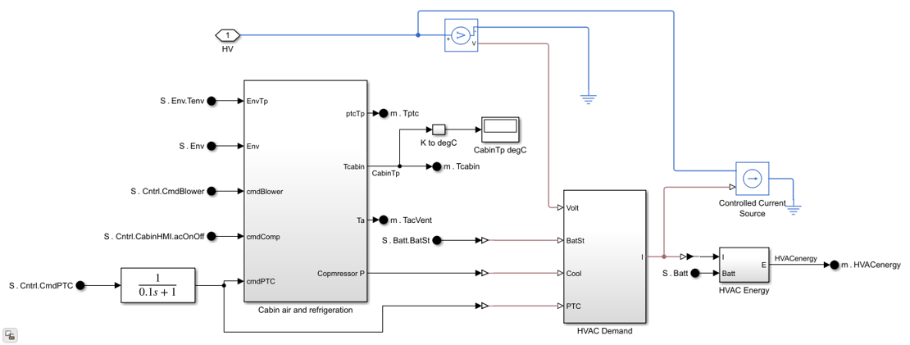

HVACEmpiricalRef
Empirical-based HVAC model with cabin and refrigeration subsystems using lookup tables.
Contents
Overview
The HVACEmpiricalRef block models the HVAC system using empirical performance curves rather than physical refrigerant dynamics. Cabin blower, PTC heater, and compressor are driven by control commands, and their performance is captured through lookup tables. A controlled current source represents the HVAC electrical power draw from the HV bus, and an energy monitoring block tracks total HVAC consumption.
Model: HVACEmpiricalRef.slx
Parameters: HVACEmpiricalRefParams.m
Thermal Coupling: No (empirical performance curves, no physical fluid dynamics)
Open Model
open_system('HVACEmpiricalRef')

Ports
Inputs
- Environment temperature - Ambient air temperature.
- Blower command - Blower speed or enable signal.
- PTC command - Cabin heater power command.
- Compressor command - AC compressor enable.
Outputs
- Cabin Temperature - Simulated cabin air temperature.
- HVAC Energy - Cumulative HVAC energy consumption.
- Blower/Cooler/PTC States - Operating states of HVAC actuators.
Workflows
The HVACEmpiricalRef block is listed in the VehicleElecAux and VehicleElectroThermal templates in VehicleTemplateConfig.json. It is suitable for cabin comfort studies and HVAC energy-demand evaluation without modeling the refrigerant loop. It is the default fidelity in the HVAC test harness.
Parameters
| Name | Default | Description |
|---|---|---|
| Cabin initial temperature | 298.15 K | Cabin air temperature at simulation start |
| Cabin initial pressure | 0.101325 MPa | Cabin air pressure at simulation start |
| Cabin setpoint temperature | 293.15 K | Target cabin temperature for HVAC control |
| Number of passengers | 1 | Passenger count for metabolic heat load |
| Per-person heat transfer | 70 W | Metabolic heat per passenger |
See HVACEmpiricalRefParams.m for a complete list of parameters.